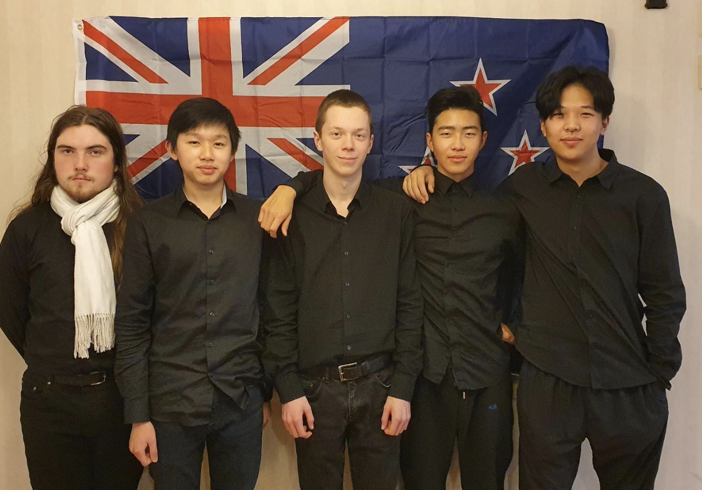

The International Young Physicists’ Tournament (IYPT) is a competition created in the USSR to foster scientific research and improved international communication in Physics. It is an annual team competition for high school physics students which had its first international event in 1988.
The IYPT is a major international Physics competition with students from high schools across the world taking part in the “World Cup of Physics”. Students participating in IYPT are selected by their member organisations in countries around the world due to a balance of theoretical and practical physics as well as an ability to communicate complex concepts to an audience and think on their feet! All of the IYPT problems and discussions in the debates during the tournament take place in English.
Each country is represented by a national team consisting of five students. In the August prior to the competition seventeen complex open-ended problems are released for the team to theoretically and experimentally research. At the competition the teams present and defend the validity of their problem solutions against teams from other countries in structured debates called “Physics Fights”. Jury panels consisting of university lecturers, industrial physicists and physics teachers rate the student’s report findings and the quality of their explanations when questioned by an opposing team.
New Zealand has competed in IYPT since 2003 and New Zealand teams have a strong reputation in the event where our highly respected teams are regularly awarded gold, silver and bronze medals.
In the early part of the school year individual students from any school can apply to represent New Zealand in IYPT. Students carry out research and present their findings to the National Organising Committee in a series of interviews. The five most successful students are selected by the NOC to represent NZ in IYPT.
In addition to the international competition, IYPT, New Zealand students have the option to participate in a national school-based competition NZYPT. This competition uses a subset of seven problems from the seventeen problems in IYPT. The IYPT problems are announced in (approx.) August of the previous year. Regional rounds of NZYPT are held in Auckland, Wellington and Christchurch. A school can enter up to two teams consisting of three students in each team. From these competitions, the top teams from each region compete in the NZ finals. We rely on the generous support of the New Zealand Royal Society, the New Zealand Institute of Physics, tertiary institutions and the Physics teaching community to carry out this event annually.
Covid-19 disrupted travel to the physical IYPT from 2020 to 2022 so the New Zealand team competed in virtual IYPT Online events. This enabled New Zealand students to gain valuable international experience though all would have preferred a physical event.
Prior to the online events IYPT 2019 – saw students from 34 countries around the world gather in Warsaw, Poland to debate their solutions to the 17 open ended problems set for the tournament. The students had carried out both theoretical and practical research to explain the phenomena described in the problems. The New Zealand students had all prepared for IYPT by attending training camps in Wellington and Auckland in addition to participation in NZYPT. The placing for the top 10 teams at the end of IYPT 2019 the tournament were:
For the full ranking of all countries go to the official IYPT results pages
The New Zealand team in Online IYPT, 2022
(Capt) Benjy Smith (Onslow College), Nelson Huang (ACG Parnell)
Michael Feng (Kristin School, Auckland), Ethan Fung (St Kentigern College)
, Atom Gush (Wellington High School)

Covid-19 and global warming issues permitting IYPT 2023 will be held in Pakistan. New Zealand will try to send a team if circumstances allow.